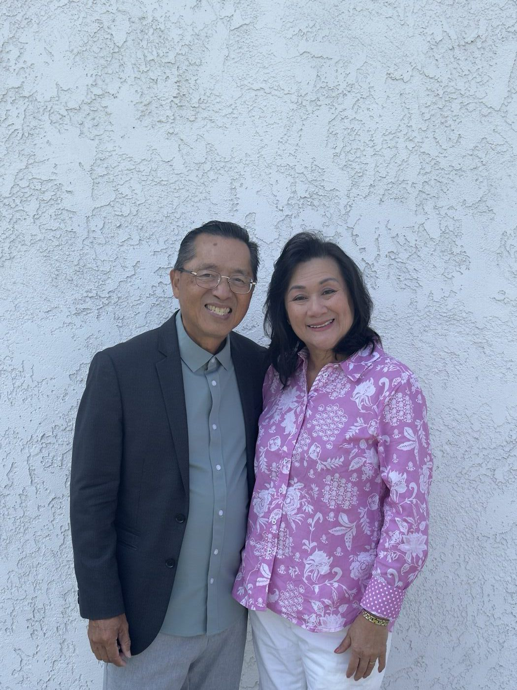
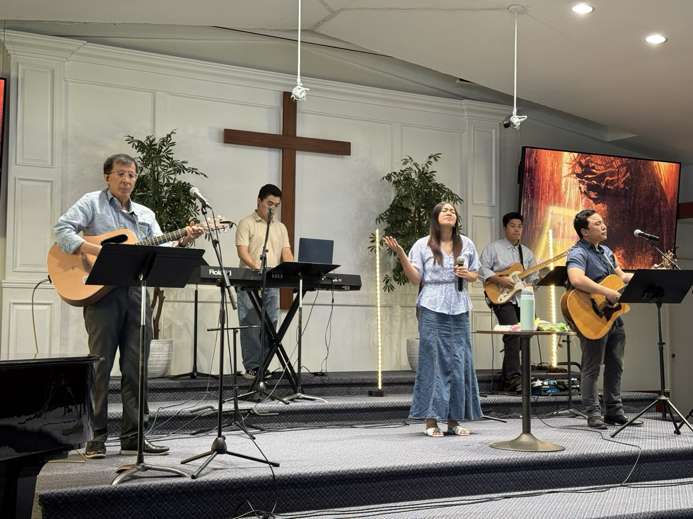
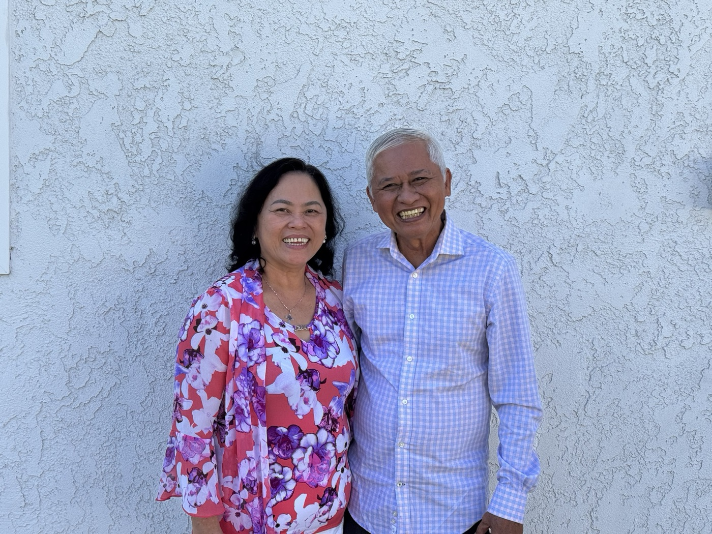
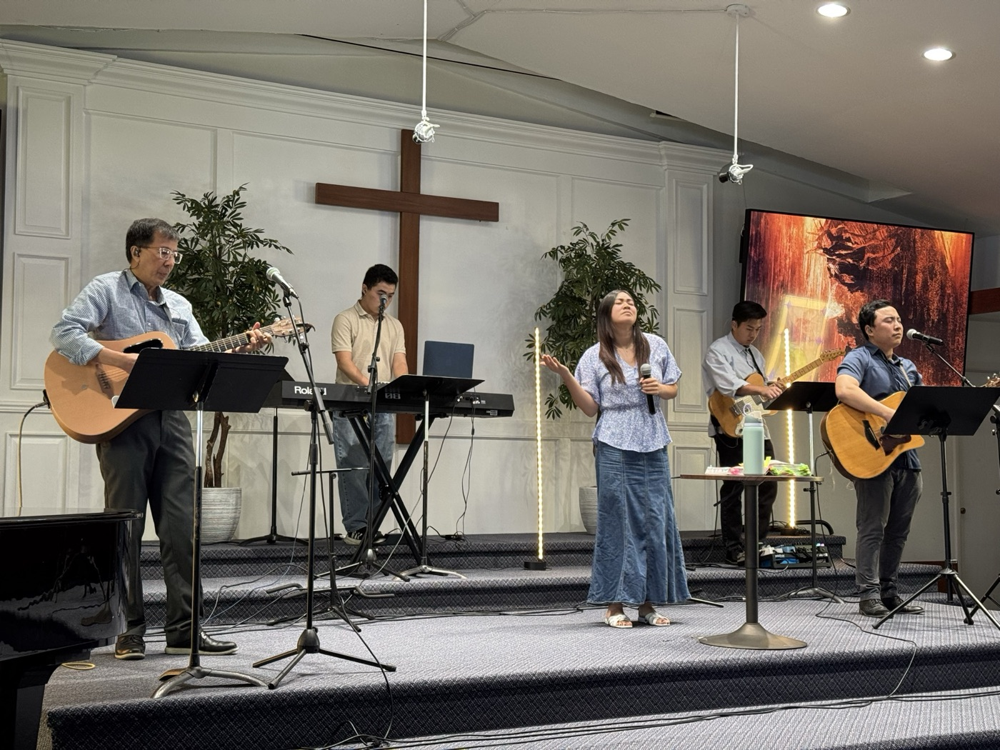
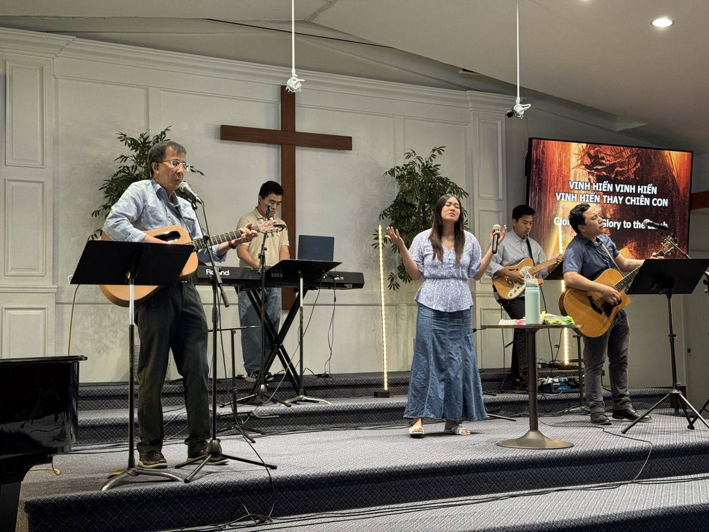

Senior Pastors
Hugh & Trisha Nguyen
Mục sư Nguyễn Như Bằng Hữu & Mục sư Nguyễn Tôn Tường Vân
Bio coming. Send a few paragraphs about Pastor Hugh and Pastor Trisha and we'll place them here.
Garden Grove, California

We are a non-denominational, Bible-based, Spirit-filled fellowship of believers, coming together to carry out what God has asked of us: reach, disciple, serve, and build.
We love spending time praising and worshiping our King Jesus, praying, studying the Word, and growing together. We would love for you to come and be part of what God is doing at Word Alive / Lời Sống. You will be welcomed, loved, and accepted.
Our mission and beliefs"Go and make disciples of all nations."
Matthew 28:19
Visit us
Service starts at 11:00am. Come a few minutes early and say hello. If you have questions before your first visit, call or email us.

Senior Pastors
Mục sư Nguyễn Như Bằng Hữu & Mục sư Nguyễn Tôn Tường Vân
Bio coming. Send a few paragraphs about Pastor Hugh and Pastor Trisha and we'll place them here.

Pastor
Husband to Pastor Regina Bui Le
Pastor Andy gave his life to Jesus at 12 years old. He became the youth and young adult leader at 22 and was ordained as a pastor at 28.
He grew up in the church and has been part of many churches across different denominations. He saw religious culture and pride take root in some of them, and he never wants anyone to go through that and have it hurt their walk with God.
He believes God wants to use him as a vessel to help people have a genuine, close relationship with Jesus beyond the four walls of the church. God has called him to change the mindset of this generation and help them understand what it really means to follow Christ and to be a precious, beloved child of God.
He wants to see a generation of God's people who understand their purpose, their value, and how much they matter to God's kingdom. His heart is to see God's children rise up as Christ-like leaders who bring Jesus wherever they go. He wants Christians to know that God can use one person, young or old, to spark a Holy Spirit revival at work, at school, at home, at church, and anywhere else they set foot, because they carry the presence of God.
Pastor
Wife to Pastor Andy Le
I grew up in church all my life, but I didn't truly make Jesus my Lord until I was about 15. For most of my life I worked toward a medical career, but God had other plans. I didn't realize that until after I graduated from college in June 2017.
Summer camp in July 2017 changed my life and set me on the path toward His perfect plan and will. That was where and when I felt God's call on my life for ministry. He showed me a vision of Him removing all my past pain, hurt, and the lies I had believed, and in that vision He spoke my true identity over me with His truth. In that moment I heard God say He was going to use me to bring His freedom and truth to this generation.
For our generation and the generations to come, Jesus is the answer to everything. He has put compassion on my heart for people of all ages to seek His presence, experience His goodness, live in freedom, and walk in purpose. I want people to understand that God loves it when we, His children, surrender our lives completely and let Him lead us into the powerful and wild plans we were always meant to live out. Making His name great, building His Kingdom, and being used for His glory is what I live by.
I believe there is so much more God wants to do through us, to bring heaven down to earth and take back what has been lost. When people step into the identity, plans, and purpose God has for them, His kingdom becomes more evident in their lives and changes the people around them. Our obedience to the Lord, our yes to Him, can change everything around us.
This is my heart and the call God has placed on my life. I am ready to see this generation know Jesus passionately, love His Word wildly, and be fully transformed by the Holy Spirit. A journey with Jesus is never boring, and it never will be!

Pastors, Vietnamese ministry
Mục sư Nhân & Mục sư Thiên Ái
Bio coming. Send a bio for Pastor Nhân and Pastor Thiên Ái, plus their full names.
Pastor
Bio coming. Send Pastor Grace's bio, full name and role and we'll place them here.
Worship
"God is Spirit, and those who worship Him must worship in spirit and truth."
John 4:24
Worship is more than singing songs or playing music. God calls us to be true worshipers who seek His presence every day.
Being a true worshiper means coming to the Lord with humility and giving ourselves to Him. It means offering a sacrifice of praise and saying, whatever is going on, that God is good, He is faithful, and He is worthy of our praise.


ABOVE
Two groups for the next generation: one for students, one for young adults.
Our summer campHigh school and college
Fridays, 6:30pmHome groups every Friday night
Contact us and we'll get you connected to a home group.
20s and early 30s
6:30pm
On break until February
Contact us to hear when we start again.
We stream on our YouTube channel, and past sermons are there too.
We give online through FlockBase. It's free and secure: sign in or create an account to get started. You can also give by Zelle or Venmo.